Matbiips example: Stochastic kinetic predator-prey model
Reference: A. Golightly and D. J. Wilkinson. Bayesian parameter inference for stochastic biochemical network models using particle Markov chain Monte Carlo. Interface Focus, vol.1, pp. 807-820, 2011.
Contents
Statistical model
Let 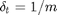 where 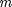 is an integer, and  a multiple of . For 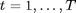 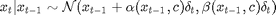
a multiple of . For 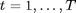 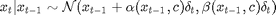
where 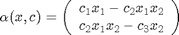 and 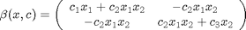
For 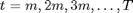, 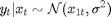
and for 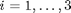
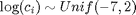
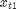 and 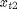 respectively correspond to the number of preys and predators and 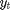 is the approximated number of preys. The model is the approximation of the Lotka-Volterra model.
Statistical model in BUGS language
model_filename = 'stoch_kinetic_cle.bug'; % BUGS model filename type(model_filename);
# Stochastic kinetic predator-prey model
# with chemical Langevin equations
#
# Reference: A. Golightly and D. J. Wilkinson. Bayesian parameter inference
# for stochastic biochemical network models using particle Markov chain
# Monte Carlo. Interface Focus, vol.1, pp. 807-820, 2011.
var x_true[2,t_max/dt], x_true_temp[2,t_max/dt],
x[2,t_max/dt], x_temp[2,t_max/dt], y[t_max/dt],
beta[2,2,t_max/dt], beta_true[2,2,t_max/dt],
logc[3], c[3], c_true[3]
data
{
x_true[,1] ~ dmnormvar(x_init_mean, x_init_var)
for (t in 2:t_max/dt)
{
alpha_true[1,t] <- c_true[1]*x_true[1,t-1] - c_true[2]*x_true[1,t-1]*x_true[2,t-1]
alpha_true[2,t] <- c_true[2]*x_true[1,t-1]*x_true[2,t-1] - c_true[3]*x_true[2,t-1]
beta_true[1,1,t] <- c_true[1]*x_true[1,t-1] + c_true[2]*x_true[1,t-1]*x_true[2,t-1]
beta_true[1,2,t] <- -c_true[2]*x_true[1,t-1]*x_true[2,t-1]
beta_true[2,1,t] <- beta_true[1,2,t]
beta_true[2,2,t] <- c_true[2]*x_true[1,t-1]*x_true[2,t-1] + c_true[3]*x_true[2,t-1]
x_true_temp[,t] ~ dmnormvar(x_true[,t-1]+alpha_true[,t]*dt, (beta_true[,,t])*dt)
# To avoid extinction
x_true[1,t] <- max(x_true_temp[1,t],1)
x_true[2,t] <- max(x_true_temp[2,t],1)
}
for (t in 1:t_max)
{
y[t/dt] ~ dnorm(x_true[1,t/dt], prec_y)
}
}
model
{
logc[1] ~ dunif(-7,2)
logc[2] ~ dunif(-7,2)
logc[3] ~ dunif(-7,2)
c[1] <- exp(logc[1])
c[2] <- exp(logc[2])
c[3] <- exp(logc[3])
x[,1] ~ dmnormvar(x_init_mean, x_init_var)
for (t in 2:t_max/dt)
{
alpha[1,t] <- c[1]*x[1,t-1] - c[2]*x[1,t-1]*x[2,t-1]
alpha[2,t] <- c[2]*x[1,t-1]*x[2,t-1] - c[3]*x[2,t-1]
beta[1,1,t] <- c[1]*x[1,t-1] + c[2]*x[1,t-1]*x[2,t-1]
beta[1,2,t] <- -c[2]*x[1,t-1]*x[2,t-1]
beta[2,1,t] <- beta[1,2,t]
beta[2,2,t] <- c[2]*x[1,t-1]*x[2,t-1] + c[3]*x[2,t-1]
x_temp[,t] ~ dmnormvar(x[,t-1]+alpha[,t]*dt, beta[,,t]*dt)
# To avoid extinction
x[1,t] <- max(x_temp[1,t],1)
x[2,t] <- max(x_temp[2,t],1)
}
for (t in 1:t_max)
{
y[t/dt] ~ dnorm(x[1,t/dt], prec_y)
}
}
Installation of Matbiips
- Download the latest version of Matbiips
- Unzip the archive in some folder
- Add the Matbiips folder to the Matlab search path
matbiips_path = '../../matbiips';
addpath(matbiips_path)
General settings
set(0, 'DefaultAxesFontsize', 14); set(0, 'Defaultlinelinewidth', 2); light_blue = [.7, .7, 1]; light_red = [1, .7, .7]; dark_blue = [0, 0, .5]; dark_red = [.5, 0, 0]; % Set the random numbers generator seed for reproducibility if isoctave() || verLessThan('matlab', '7.12') rand('state', 0) else rng('default') end
Load model and data
Model parameters
t_max = 20; dt = .2; x_init_mean = [100; 100]; x_init_var = 10*eye(2); c_true = [.5, .0025, .3]; prec_y = 1/10; data = struct('t_max', t_max, 'dt', dt, 'c_true', c_true,... 'x_init_mean', x_init_mean, 'x_init_var', x_init_var, 'prec_y', prec_y);
Compile BUGS model and sample data
sample_data = true; % Boolean model = biips_model(model_filename, data, 'sample_data', sample_data); % Create Biips model and sample data data = model.data;
* Parsing model in: stoch_kinetic_cle.bug * Compiling data graph Declaring variables Resolving undeclared variables Allocating nodes Graph size: 1914 Sampling data Reading data back into data table * Compiling model graph Declaring variables Resolving undeclared variables Allocating nodes Graph size: 2713
Plot data
figure('name', 'Data') t_vec = dt:dt:t_max; plot(t_vec, data.x_true(1,:)) hold on plot(t_vec, data.x_true(2,:), 'r') plot(t_vec, data.y, 'g*') xlabel('Time') ylabel('Number of individuals') legend('Prey', 'Predator', 'Measurements') box off legend boxoff

Biips Sensitivity analysis with Sequential Monte Carlo
Parameters of the algorithm
n_part = 100; % Number of particles param_names = {'logc[1]', 'logc[2]', 'logc[3]'}; % Parameter for which we want to study sensitivity n_grid = 20; param_values = {linspace(-7,1,n_grid), repmat(log(c_true(2)), n_grid, 1), repmat(log(c_true(3)), n_grid, 1)}; % Range of values % n_grid = 5; % [param_values{1:3}] = meshgrid(linspace(-7,1,n_grid), linspace(-7,1,n_grid), linspace(-7,1,n_grid)); % param_values = cellfun(@(x) x(:), param_values, 'uniformoutput', false);
Run sensitivity analysis with SMC
out_sens = biips_smc_sensitivity(model, param_names, param_values, n_part);
* Analyzing sensitivity with 100 particles |--------------------------------------------------| 100% |**************************************************| 20 iterations in 3.88 s
Plot penalized log-marginal likelihood
figure('name', 'Sensitivity: Penalized log-marginal likelihood'); plot(param_values{1}, out_sens.log_marg_like_pen, '.') xlabel('log(c_1)') ylabel('Penalized log-marginal likelihood') ylim([-15000, 0]) box off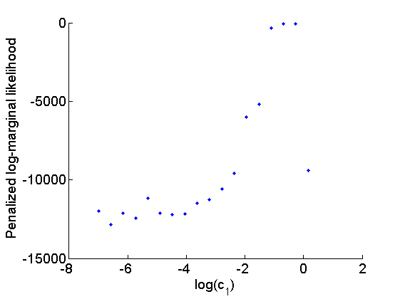
Biips Particle Marginal Metropolis-Hastings
We now use Biips to run a Particle Marginal Metropolis-Hastings in order to obtain posterior MCMC samples of the parameters and variables 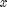.
Parameters of the PMMH
n_burn = 2000; % nb of burn-in/adaptation iterations n_iter = 20000; % nb of iterations after burn-in thin = 10; % thinning of MCMC outputs n_part = 100; % nb of particles for the SMC param_names = {'logc[1]', 'logc[2]', 'logc[3]'}; % names of the variables updated with MCMC (others are updated with SMC) latent_names = {'x'}; % names of the variables updated with SMC and that need to be monitored
Init PMMH
obj_pmmh = biips_pmmh_init(model, param_names, 'inits', {-1, -5, -1},... 'latent_names', latent_names); % creates a pmmh object
* Initializing PMMH
Run PMMH
obj_pmmh = biips_pmmh_update(obj_pmmh, n_burn, n_part); % adaptation and burn-in iterations [obj_pmmh, out_pmmh, log_marg_like_pen] = biips_pmmh_samples(obj_pmmh, n_iter, n_part,... 'thin', thin); % Samples
* Adapting PMMH with 100 particles |--------------------------------------------------| 100% |++++++++++++++++++++++++++++++++++++++++++++++++++| 2000 iterations in 293.14 s * Generating 2000 PMMH samples with 100 particles |--------------------------------------------------| 100% |**************************************************| 20000 iterations in 3455.99 s
Some summary statistics
summ_pmmh = biips_summary(out_pmmh, 'probs', [.025, .975]);
Compute kernel density estimates
kde_pmmh = biips_density(out_pmmh);
param_true = log(c_true);
param_lab = {'log(c_1)', 'log(c_2)', 'log(c_3)'};
Posterior mean and credible interval of the parameters
for i=1:numel(param_names) summ_param = getfield(summ_pmmh, param_names{i}); fprintf('Posterior mean of %s: %.3f\n', param_names{i}, summ_param.mean); fprintf('95%% credibile interval of %s: [%.1f, %.1f]\n',... param_names{i}, summ_param.quant{1}, summ_param.quant{2}); end
Posterior mean of logc[1]: -0.561 95% credibile interval of logc[1]: [-0.7, -0.4] Posterior mean of logc[2]: -6.174 95% credibile interval of logc[2]: [-6.3, -6.0] Posterior mean of logc[3]: -1.512 95% credibile interval of logc[3]: [-1.9, -1.2]
Trace of MCMC samples for the parameters
for i=1:numel(param_names) figure('name', 'PMMH: Trace samples parameter') samples_param = getfield(out_pmmh, param_names{i}); plot(samples_param, 'linewidth', 1); hold on plot(0, param_true(i), '*g'); xlabel('Iteration') ylabel(param_lab{i}) title(param_lab{i}) box off end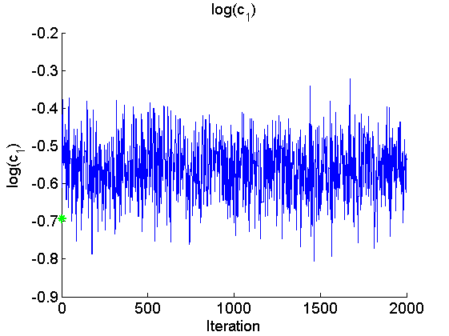 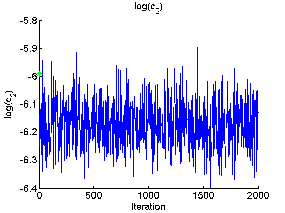 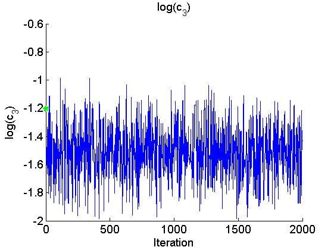
Histogram and KDE estimate of the posterior for the parameters
for i=1:numel(param_names) figure('name', 'PMMH: Histogram posterior parameter') samples_param = getfield(out_pmmh, param_names{i}); hist(samples_param, 15) h = findobj(gca, 'Type', 'patch'); set(h, 'EdgeColor', 'w') hold on plot(param_true(i), 0, '*g'); xlabel(param_lab{i}) ylabel('Number of samples') title(param_lab{i}) box off end for i=1:numel(param_names) figure('name', 'PMMH: KDE estimate posterior parameter') kde_param = getfield(kde_pmmh, param_names{i}); plot(kde_param.x, kde_param.f); hold on plot(param_true(i), 0, '*g'); xlabel(param_lab{i}); ylabel('Posterior density'); title(param_lab{i}) box off end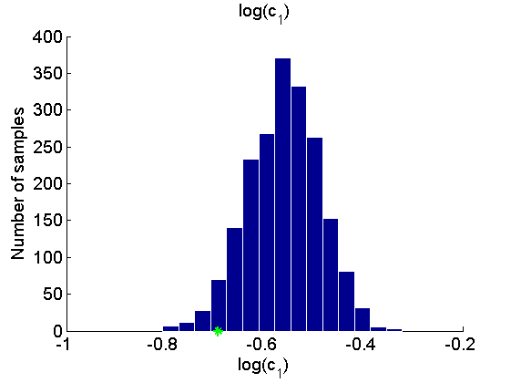 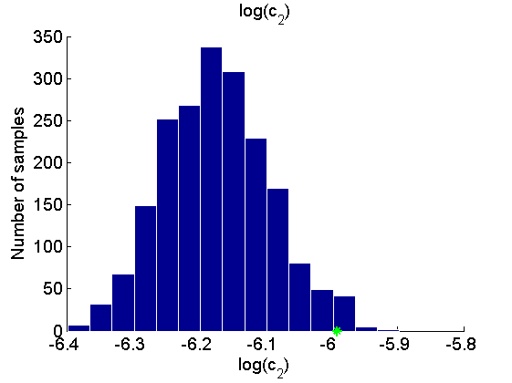 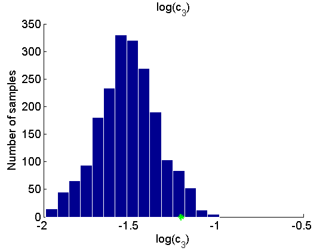 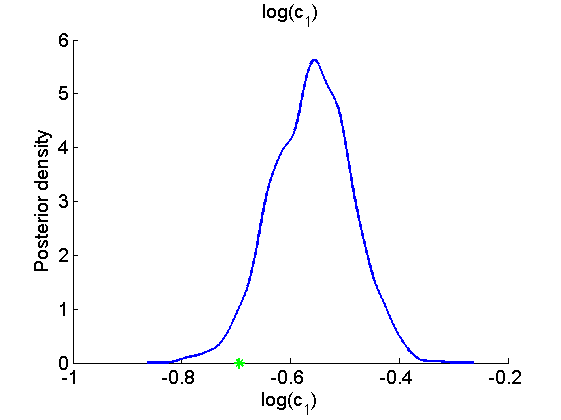
 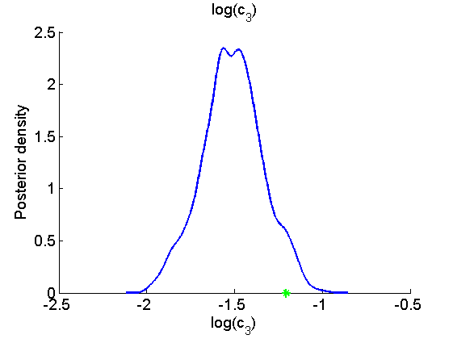
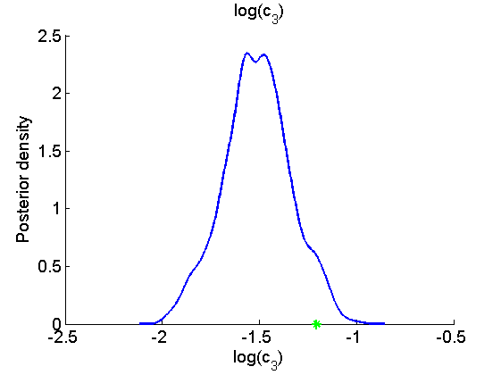 Posterior mean and quantiles for x
figure('name', 'PMMH: Posterior mean and quantiles') x_pmmh_mean = summ_pmmh.x.mean; x_pmmh_quant = summ_pmmh.x.quant; h = fill([t_vec, fliplr(t_vec)], [x_pmmh_quant{1}(1,:), fliplr(x_pmmh_quant{2}(1,:))], 0); set(h, 'edgecolor', 'none', 'facecolor', light_blue) hold on plot(t_vec, x_pmmh_mean(1, :), 'linewidth', 3) plot(t_vec, data.x_true(1,:), '--', 'color', dark_blue) h = fill([t_vec, fliplr(t_vec)], [x_pmmh_quant{1}(2,:), fliplr(x_pmmh_quant{2}(2,:))], 0); set(h, 'edgecolor', 'none', 'facecolor', light_red) plot(t_vec, x_pmmh_mean(2, :), 'r', 'linewidth', 3) plot(t_vec, data.x_true(2,:), '--', 'color', dark_red) xlabel('Time') ylabel('Number of individuals') ylim([0, 1500]) legend({'95% credible interval (prey)', 'PMMH mean estimate (prey)', 'True number of preys',... '95% credible interval (predator)', 'PMMH mean estimate (predator)',... 'True number of predators'}) legend boxoff box off saveas(gca, 'stoch_kinetic_x', 'epsc2') saveas(gca, 'stoch_kinetic_x', 'png')

Clear model
biips_clear(model)